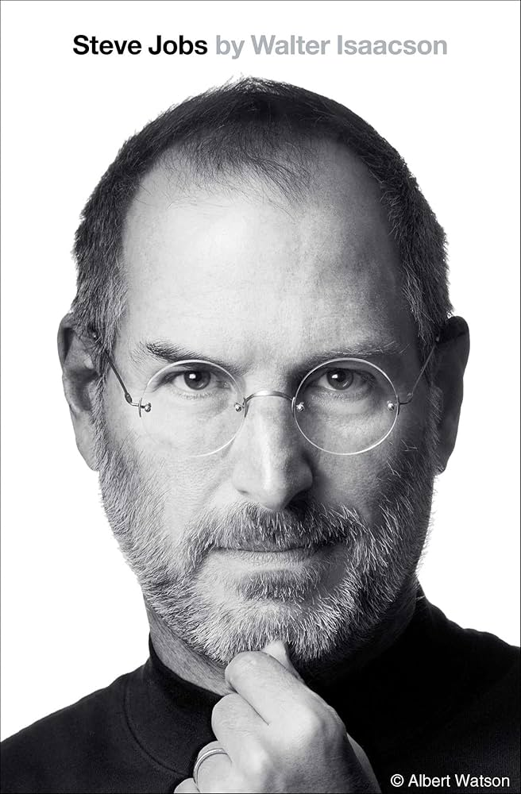

24 กุมภาพันธ์ 1955 — 5 ตุลาคม 2011
"Innovation distinguishes between a leader and a follower."

วัยเด็ก
สตีฟ จ็อบส์ เกิดเมื่อวันที่ 24 กุมภาพันธ์ 1955 ที่เมืองซานฟรานซิสโก รัฐแคลิฟอร์เนีย สหรัฐอเมริกา บิดาและมารดาทางสายเลือดคือ อับดุลฟัตตาห์ จอห์น จันดาลี และโจแอนน์ ชีเบิล แต่เขาถูกรับเลี้ยงโดยพอล และคลารา จ็อบส์
ตั้งแต่เด็ก สตีฟแสดงความสนใจพิเศษด้านอิเล็กทรอนิกส์ เขาได้รับการสนับสนุนจากพ่อบุญธรรมซึ่งเป็นช่างกลในการเรียนรู้เกี่ยวกับเครื่องยนต์และอุปกรณ์ไฟฟ้า สิ่งเหล่านี้หล่อหลอมความคิดสร้างสรรค์และความอยากรู้อยากเห็นของเขาตลอดชีวิต
เขาเข้าเรียนที่ Reed College ในโอเรกอน แต่ลาออกหลังเรียนเพียงหนึ่งภาคเรียน อย่างไรก็ตาม เขายังคงแอบฟังบทเรียนที่สนใจ หนึ่งในนั้นคือวิชาการออกแบบตัวอักษร ซึ่งต่อมากลายเป็นรากฐานของการออกแบบฟอนต์สวยงามในเครื่อง Mac
1976
ในปี 1976 สตีฟ จ็อบส์ วัย 21 ปี ร่วมกับ สตีฟ วอซเนียก และ โรนัลด์ เวย์น ก่อตั้ง Apple Computer Company ในโรงรถของครอบครัวที่เมืองคูเปอร์ติโน รัฐแคลิฟอร์เนีย
Apple II ที่เปิดตัวในปี 1977 กลายเป็นคอมพิวเตอร์ส่วนบุคคลที่ประสบความสำเร็จอย่างมาก และทำให้ Apple กลายเป็นหนึ่งในบริษัทที่เติบโตเร็วที่สุดในประวัติศาสตร์อเมริกา
จุดเปลี่ยนสำคัญคือการเปิดตัว Macintosh ในปี 1984 พร้อมโฆษณา "1984" ที่กลายเป็นตำนาน นับเป็นคอมพิวเตอร์เครื่องแรกที่ใช้ Graphical User Interface และ Mouse ทำให้คอมพิวเตอร์เข้าถึงได้ง่ายสำหรับคนทั่วไป
เส้นทางชีวิต
กำเนิดที่รัฐแคลิฟอร์เนีย สหรัฐอเมริกา ถูกรับเลี้ยงโดยครอบครัวจ็อบส์
ร่วมก่อตั้ง Apple Computer Company กับ Steve Wozniak ในโรงรถ
นำเสนอ Mac เครื่องแรก พร้อมโฆษณาตำนาน "1984" ในงาน Super Bowl
ถูกบีบออกจาก Apple โดยคณะกรรมการบริษัท ก่อตั้ง NeXT Computer
ซื้อกิจการ Pixar Animation Studios จาก George Lucas ในราคา 5 ล้านดอลลาร์
Apple ซื้อกิจการ NeXT ทำให้จ็อบส์กลับมาเป็น CEO ช่วยพลิกฟื้น Apple
เปลี่ยนอุตสาหกรรมเพลง พร้อมเปิด Apple Store สาขาแรก
นำเสนอ iPhone รุ่นแรก ณ งาน Macworld สร้างปรากฏการณ์สมาร์ทโฟน
กำเนิดหมวดสินค้าแท็บเล็ตสมัยใหม่ที่เปลี่ยนโลกคอมพิวติ้ง
เสียชีวิตเมื่อวันที่ 5 ตุลาคม 2011 ด้วยโรคมะเร็งตับอ่อน รวมอายุ 56 ปี
Legacy
สตีฟ จ็อบส์ ทิ้งมรดกอันยิ่งใหญ่ไว้กับโลก ผลิตภัณฑ์ที่เขาสร้างขึ้นอย่าง iPhone, Mac, iPod และ iPad ได้เปลี่ยนแปลงวิธีที่มนุษย์สื่อสาร ทำงาน และบันเทิงตนเองอย่างสิ้นเชิง
ปรัชญาการออกแบบของเขาที่เน้น "ความเรียบง่ายคือความสวยงามสูงสุด" และการผสานเทคโนโลยีกับมนุษยศาสตร์ ได้กลายเป็นแนวทางของนักออกแบบและนักพัฒนาทั่วโลก
Apple ภายใต้วิสัยทัศน์ของเขากลายเป็นบริษัทที่มีมูลค่าสูงที่สุดในโลก และยังคงสร้างนวัตกรรมที่สร้างแรงบันดาลใจให้ผู้คนทั่วโลกมาจนถึงทุกวันนี้
คำคมที่มีชื่อเสียง
Your work is going to fill a large part of your life, and the only way to be truly satisfied is to do what you believe is great work.
Stay hungry, stay foolish.
Design is not just what it looks like and feels like. Design is how it works.